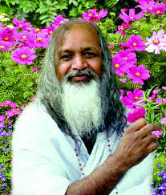

After the death of Swami Brahmananda Saraswathi, in 1953, Mahesh travelled to Uttarkashi, in the Himalayas. The two years he spent in Himalayas enabled him to deepen his meditation experience. He left Uttarkashi in 1955 and decided to teach the world, the traditional meditations techniques, which he had learnt from his master.He named these techniques “Transcendental Meditation”. Transcendental Meditation is a mental technique that helps a person in achieving consciousness. It involves the use of mantra through which the mind becomes alert, but the body feels relaxed. Meanwhile he assumed the title of “Maharishi”. Thereafter, he started public teaching of meditation techniques. He started the spiritual re-generation movement in 1957, by establishing his first organisation in Chennai, the same year.He received positive feedback from spiritual re-generation movement which motivated him to expand his teachings. His tour to Rangoon (Burma) in 1958, marked the beginning of world tour to teach the Transcendental Meditation techniques. Later, he travelled to the United States in 1959, to establish his spiritual re-generatio movement there. After popularizing the movement in the United States, he travelled to Europe to expand his teachings further.

His Holiness Maharishi Mahesh Yogi returned to India and established a number of Administrative Centres in India, where he gave lectures and taught about the Transcendental Meditation techniques. A number of practitioners trained to serve as Teachers of this technique. H.H. Maharishi Mahesh Yogi organized his first International Teacher Training Course in Rishikesh, in 1961. Maharishi Mahesh Yogi established his first International University in 1971, which he re-named `Maharishi University of Management’. Taped lectures and writings of the Maharishi about Science of Creative Intelligence have been stored in the University’s Library. Maharishi University of Management is accredited with combining Modern Science with Vedic Science. His increasing interest in Vedic Knowledge motivated him to translate and give commentary on the first six chapters of Bhagavad Gita.
In addition to Transcendental Meditation techniques for over 30 years, the TM-Siddhi Programme designed by him proves to be quite beneficial in group practice. The TM Movement has become very popular. Many scientists have found physical and mental health benefits from the Transcendental Meditation techniques.The little seed sowed by him had nourished into a structured tree, the fruit of which is reared through implementation of Transcendental Meditation techniques in our schools, throughout.Maharishi Mahesh Yogi breathed his last on February 5th, 2008 at Vlodrop, The Netherlands. Today, there are more than 5 million followers of Maharishi, who seek to attain higher state of consciousness.
“All that we are is the result of what we have thought. The mind is everything. What we think, we become”.
– "Maharishi Mahesh Yogi"
BACK TO MAIN PAGE